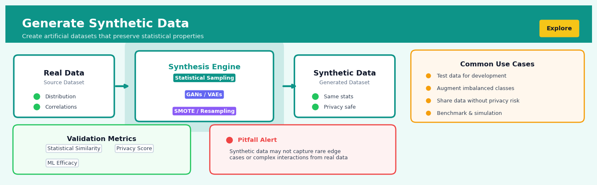

Generate Synthetic Data#


Generate Synthetic Data is a core transformation in the Explore workflow.
The 60-Second Version#
What it does: Synthetic data generation creates entirely new datasets that look and behave like your real data but contain no actual records from it.
When to use it: You need data for testing, development, or analysis but face privacy regulations, competitive sensitivity, or simply don’t have enough real examples to work with.
What you get back: A dataset you can freely share, publish, or train models on without exposing confidential information or real individuals.
At a Glance
Difficulty |
Moderate |
Typical runtime |
Minutes for 100K rows (depends on complexity) |
What you bring |
An original dataset or statistical description of the data you want to mimic |
What you get |
A new dataset with similar patterns but no real records |
Heuristix bucket |
Explore — Shaping & Transforming Data |
Synthetic data is not anonymized data—it’s manufactured from scratch, but poor-quality generation can still leak sensitive patterns from the original source.
Learning Objectives#
After reading this chapter, a business user will be able to:
Identify when synthetic data generation is appropriate for your use case, including scenarios involving privacy regulations, data scarcity, class imbalance, or third-party data sharing requirements.
Interpret synthetic data quality reports and explain to stakeholders whether the generated data adequately preserves the statistical properties and business logic of the original dataset.
Decide which data columns and relationships must be preserved in synthetic data based on downstream analytical needs and regulatory constraints.
After reading this chapter, a data scientist will be able to:
Implement synthetic data generation using statistical sampling methods, generative adversarial networks (GANs), or variational autoencoders (VAEs) while handling mixed data types, missing values, and complex multivariate dependencies.
Tune generation parameters such as privacy budget (epsilon), sample size, correlation thresholds, and model complexity to balance between data utility, privacy guarantees, and computational efficiency.
Validate synthetic datasets by comparing distributional properties, correlation structures, and predictive model performance between real and synthetic data, and diagnose common failures including mode collapse, privacy leakage, and loss of rare patterns.
Overview#
Synthetic data generation is the process of algorithmically creating artificial datasets that preserve the statistical properties, distributional characteristics, and relational structures of real data without containing actual observed records. This technique belongs to the family of generative modelling and simulation methods, sitting at the intersection of probability theory, statistical sampling, and machine learning. Its core purpose is to produce data that is statistically representative of a target population while enabling use cases where real data is scarce, sensitive, imbalanced, or otherwise constrained.
When to Use This#
Use this when:
Privacy constraints prevent sharing real data — When regulations such as GDPR, HIPAA, or internal data governance policies prohibit the use of production data for model development, testing, or third-party collaboration, synthetic data provides a privacy-preserving alternative that maintains analytical utility.
Training data exhibits severe class imbalance — When your target variable has rare events (fraud cases, equipment failures, disease diagnoses) that constitute less than 1–5% of observations, synthetic oversampling of minority classes can improve model sensitivity without simple duplication.
Stress-testing models under hypothetical scenarios — When you need to evaluate model robustness against distribution shifts, edge cases, or black swan events that have not yet occurred in historical data, synthetic generation allows controlled experimentation.
Augmenting small datasets for machine learning — When data collection is expensive, time-consuming, or practically limited (clinical trials, manufacturing defects, new product launches), synthetic augmentation can expand effective sample sizes.
Creating realistic test data for software development — When development, QA, and staging environments require data that mimics production characteristics without exposing sensitive information, synthetic data enables realistic testing.
Validating statistical methods via simulation — When you need to assess estimator properties (bias, variance, coverage) under known ground truth, synthetic data with controlled parameters enables rigorous methodological validation.
Sharing datasets for research collaboration — When proprietary business data cannot be released but statistical patterns need to be communicated, synthetic versions preserve analytical value while protecting intellectual property.
Do NOT use this when:
Exact record-level accuracy is required — Synthetic data cannot reproduce specific individual observations; do not use it for auditing, compliance reporting, or any application requiring traceable provenance to real events.
The generative model cannot capture essential structure — If the relationships in your data are highly complex, nonlinear, or involve latent factors you cannot model adequately, synthetic data may introduce systematic biases that corrupt downstream analysis.
Validation against ground truth is impossible — If you cannot assess whether synthetic data adequately represents the target distribution, you risk building models on artefacts of the generation process rather than genuine patterns.
Questions This Answers#
Privacy, Compliance, and Data Access#
Can we share customer data with our external analytics partner without violating GDPR or risking a privacy breach?
How do we give our offshore development team realistic test data without exposing actual patient records?
Is there a way to let our data science team experiment freely without going through a 6-week approval process every time they need production data?
Can we publish a public dataset for researchers without compromising our customers’ identities or competitive advantage?
Building and Testing Before Launch#
How do we test our new fraud detection system before going live when we only see 0.3% fraud cases in our current data?
Can we simulate what our database will look like at 10 million customers when we currently only have 50,000?
Is it possible to train our credit scoring model for underserved segments when we have almost no historical loan data for them?
How do we stress-test our checkout system for Black Friday traffic without waiting until Black Friday to find out it breaks?
What’s the fastest way to build a demo with realistic-looking customer data for next week’s investor presentation?
Accelerating Model Performance#
Why is our churn prediction model failing for our new product line when it works fine for our legacy products?
Can we improve our recommendation engine’s accuracy for new users when we have no purchase history for them yet?
How do we balance our training dataset when 95% of transactions are normal and only 5% are the anomalies we actually care about detecting?
Is there a way to augment our limited training data to make our computer vision model more robust without spending $200K on additional labeling?
How It Works#
Imagine you’re a baker who’s perfected a signature sourdough recipe over decades. You can’t share your actual starter culture—it contains proprietary wild yeast strains unique to your bakery—but a culinary school desperately needs training data for students. So instead of sending the original, you study its characteristics: the pH level, the ratio of bacteria to yeast, how it bubbles at different temperatures, its rising patterns. Then you create a new starter from scratch that behaves just like yours—smells similar, rises at the same rate, produces comparable flavor—but contains completely different microorganisms. The students get realistic training material, and your trade secret stays protected. That’s synthetic data generation: learning the “recipe” of real data to create new examples that work like the original without being copies of it.
REAL DATA (sensitive) LEARNING PHASE SYNTHETIC DATA (safe)
┌────────────────────┐ │ ┌────────────────────┐
│ ID │ Age │ Salary │ │ │ ID │ Age │ Salary │
├────┼─────┼────────┤ │ ├────┼─────┼────────┤
│ 01 │ 34 │ 72K │──┐ │ │ S1 │ 31 │ 68K │
│ 02 │ 29 │ 54K │ │ │ │ S2 │ 41 │ 89K │
│ 03 │ 45 │ 95K │ ├──> [STATISTICAL ───────>│ S3 │ 27 │ 51K │
│ 04 │ 38 │ 81K │ │ MODEL LEARNS: │ S4 │ 36 │ 74K │
│ 05 │ 52 │ 110K │──┘ - Age range 25-55 │ S5 │ 48 │ 102K │
└────┴─────┴────────┘ - Salary correlates └────┴─────┴────────┘
(actual people) with age (fictional people)
- Distribution shape ↓
- Relationships] Same patterns,
different individuals
Step 1: Analyze the original data’s patterns. The algorithm scans through your real dataset, measuring everything measurable: what values appear and how often, what ranges exist for each column, how different variables relate to each other (older employees tend to earn more, for instance), and what the overall shape of the distributions looks like.
Step 2: Build a statistical model of those patterns. Think of this as creating a blueprint or recipe. The algorithm constructs an internal representation that captures the rules and regularities it discovered—not the actual data points themselves, but the underlying structure that generated them.
Step 3: Sample new data points from the learned model. Now the algorithm generates fresh records by following the blueprint. It randomly creates values that respect all the patterns it learned: ages within the realistic range, salaries that correlate appropriately with age, distributions that mirror the original shape. Each new record is invented from scratch, not copied or slightly modified from real entries.
Step 4: Validate that synthetic data matches real data statistically. The algorithm compares summary statistics, distributions, and relationships between the synthetic and original datasets. If they don’t match closely enough, it adjusts the model and regenerates until the synthetic version is statistically indistinguishable from the real thing.
Step 5: Output the artificial dataset for use. The final synthetic dataset contains none of the original records but behaves like the real data in analysis, modeling, and testing scenarios.
The key insight: By learning and replicating the statistical “personality” of data rather than copying individual records, synthetic generation lets you share, augment, or test with realistic information while protecting privacy and confidentiality.
The Intuition#
Imagine you are a theatrical prop master tasked with creating a treasure chest full of gold coins for a period drama. You cannot use real gold—it is too expensive, too heavy, and too valuable to risk. Instead, you craft convincing replicas: coins that have the right weight distribution, the appropriate visual texture, realistic variations in size, and authentic-looking imperfections. An audience member inspecting a handful of these props should find them indistinguishable from the real thing in all the ways that matter for the story being told.
Synthetic data generation follows this same principle. We are not trying to clone individual records—we are trying to capture the essence of a dataset: its probability distributions, correlations, clusters, and boundary conditions. A well-generated synthetic dataset should be statistically interchangeable with the original for any reasonable analytical purpose. When you compute summary statistics, fit models, or test hypotheses on synthetic data, you should reach the same conclusions you would have reached with the real data, within quantifiable margins of uncertainty.
The key insight is that data is not just a collection of numbers—it is a sample drawn from some underlying data-generating process. If we can learn that process (or a sufficiently good approximation of it), we can draw new samples from it at will. This is the fundamental shift in perspective: from treating data as fixed observations to treating data as realisations of a generative model. The quality of synthetic data depends entirely on how well our model captures the true generative process. A simple model (like assuming all variables are independent Gaussians) will produce synthetic data that matches marginal distributions but destroys correlations. A sophisticated model (like a copula, Bayesian network, or generative adversarial network) can preserve complex dependency structures, but at the cost of additional assumptions and computational complexity.
The Mathematics#
Formal Problem Setup#
Let \(\mathbf{X} = \{\mathbf{x}_1, \mathbf{x}_2, \ldots, \mathbf{x}_n\}\) denote the observed dataset, where each \(\mathbf{x}_i \in \mathbb{R}^p\) is a \(p\)-dimensional observation. We assume these observations are independent and identically distributed (i.i.d.) samples from an unknown probability distribution \(P_{\text{data}}\) with density \(f(\mathbf{x})\).
The goal of synthetic data generation is to construct a generative model \(\hat{P}\) with density \(\hat{f}(\mathbf{x}; \boldsymbol{\theta})\) parameterised by \(\boldsymbol{\theta}\), such that samples \(\mathbf{X}^{\text{syn}} = \{\mathbf{x}_1^{\text{syn}}, \ldots, \mathbf{x}_m^{\text{syn}}\}\) drawn from \(\hat{P}\) are statistically indistinguishable from samples drawn from \(P_{\text{data}}\) for a defined class of statistical queries.
Parametric Density Estimation#
The simplest approach assumes a parametric family for \(f\). For multivariate Gaussian data:
Maximum likelihood estimates are:
Synthetic samples are then generated via the Cholesky decomposition. If \(\hat{\boldsymbol{\Sigma}} = \mathbf{L}\mathbf{L}^\top\), then:
Copula-Based Generation#
For non-Gaussian data with complex marginal distributions and dependency structures, copulas provide a powerful decomposition. By Sklar’s theorem, any joint distribution \(F(\mathbf{x})\) can be written as:
where \(F_j\) are the marginal CDFs and \(C: [0,1]^p \to [0,1]\) is the copula function capturing the dependency structure.
The generation procedure is:
Estimate marginal distributions \(\hat{F}_j\) (parametrically or via empirical CDFs)
Transform data to uniform margins: \(u_{ij} = \hat{F}_j(x_{ij})\)
Fit a copula \(\hat{C}\) to the transformed data
Sample \(\mathbf{u}^{\text{syn}} \sim \hat{C}\)
Transform back: \(x_j^{\text{syn}} = \hat{F}_j^{-1}(u_j^{\text{syn}})\)
For the Gaussian copula with correlation matrix \(\mathbf{R}\):
where \(\Phi\) is the standard normal CDF and \(\Phi_{\mathbf{R}}\) is the multivariate normal CDF with correlation \(\mathbf{R}\).
Kernel Density Estimation (KDE)#
For nonparametric density estimation, the kernel density estimator is:
where \(K\) is a kernel function (commonly Gaussian) and \(h > 0\) is the bandwidth. The optimal bandwidth under mean integrated squared error for Gaussian kernels and Gaussian data is:
Sampling from a KDE involves:
Select an observation \(\mathbf{x}_i\) uniformly at random
Add kernel noise: \(\mathbf{x}^{\text{syn}} = \mathbf{x}_i + h \cdot \boldsymbol{\epsilon}\), where \(\boldsymbol{\epsilon} \sim K\)
SMOTE for Imbalanced Classification#
The Synthetic Minority Over-sampling Technique (SMOTE) generates synthetic minority class samples by interpolation. For minority class observation \(\mathbf{x}_i\):
Find its \(k\) nearest neighbours in the minority class: \(\{\mathbf{x}_{i_1}, \ldots, \mathbf{x}_{i_k}\}\)
Select one neighbour \(\mathbf{x}_{i_j}\) at random
Generate: \(\mathbf{x}^{\text{syn}} = \mathbf{x}_i + \lambda (\mathbf{x}_{i_j} - \mathbf{x}_i)\)
where \(\lambda \sim \text{Uniform}(0, 1)\).
Assumptions and Limitations#
The fundamental assumptions underlying synthetic data generation include:
Distributional stationarity: The generative process does not change between estimation and deployment
Sample representativeness: The observed data adequately represents the target population
Model adequacy: The chosen generative model family can approximate the true density
Independence or known dependence: Temporal or spatial correlations must be explicitly modelled
Edge cases include:
Sparse high-dimensional data: Curse of dimensionality makes density estimation unreliable when \(p \gg n\)
Discrete and mixed-type data: Continuous methods require adaptation for categorical variables
Structural zeros: Some variable combinations may be logically impossible and must be enforced post-generation
Understanding the Mathematics#
Probability Density Function for Continuous Variables#
The equation:
Read it aloud:
“The probability density function tells us how likely we are to observe a particular value x, based on some parameters theta that define the shape of our distribution.”
What each symbol means:
\(f(x; \theta)\) = the density function (how concentrated the probability is at point x)
\(x\) = a specific value we’re evaluating (e.g., a customer’s age or transaction amount)
\(\theta\) = the parameters that define our distribution’s shape (like mean and standard deviation)
\(;\) = “given” or “conditional on”
A concrete numerical example:
Suppose we’re generating synthetic salary data. Real employee salaries have mean \(\mu = 75,000\) and standard deviation \(\sigma = 15,000\). Here \(\theta = (\mu, \sigma)\). If we want to know the density at x = 80,000, we plug into a normal distribution formula and get f(80,000; 75,000, 15,000) ≈ 0.000024. This small number tells us salary values cluster around this point with moderate likelihood.
Why this equation matters:
Without understanding the probability density, we’d generate synthetic data with the wrong distribution shape—producing impossible salaries like $500,000 for junior staff or negative values.
Sampling from a Distribution#
The equation:
Read it aloud:
“A synthetic data point x is drawn from (sampled according to) a probability distribution P, which is controlled by parameters theta.”
What each symbol means:
\(x_{\text{synthetic}}\) = one artificial data point we’re creating
\(\sim\) = “is drawn from” or “follows the distribution”
\(P(x; \theta)\) = the probability distribution we’re sampling from
\(\theta\) = parameters defining that distribution
A concrete numerical example:
We want to generate synthetic customer ages. Real data shows ages follow a normal distribution with mean = 42 years and standard deviation = 12 years. So \(\theta = (42, 12)\). We sample: \(x_{\text{synthetic}} \sim \text{Normal}(42, 12)\). Our random number generator might return 38, then 51, then 44—each drawn according to that distribution’s probabilities.
Why this equation matters:
This is the core act of synthetic data generation—actually producing new values that respect the statistical patterns we measured in real data.
Kullback-Leibler Divergence#
The equation:
Read it aloud:
“The KL divergence measures how different our synthetic distribution is from the real distribution by summing, across all possible values, the real probability times the logarithm of the ratio between real and synthetic probabilities.”
What each symbol means:
\(D_{KL}\) = Kullback-Leibler divergence (a measure of distribution mismatch)
\(P_{\text{real}}(x)\) = probability of value x in real data
\(P_{\text{synthetic}}(x)\) = probability of value x in synthetic data
\(\|\) = “compared to” or “relative to”
\(\sum_{x}\) = sum over all possible values
\(\log\) = logarithm (amplifies large differences)
A concrete numerical example:
Suppose real transaction amounts have P(small) = 0.7, P(large) = 0.3. Our synthetic data has P(small) = 0.5, P(large) = 0.5. Then:
A KL divergence of 0.082 indicates our synthetic data has drifted from reality—we’re generating too many large transactions.
Why this equation matters:
KL divergence tells us objectively whether our synthetic data is believable or badly miscalibrated, preventing us from training models on misleading fake data.
The Big Picture#
The mathematics of synthetic data generation is fundamentally trying to capture reality’s statistical fingerprint and reproduce it without copying actual records. We use probability distributions because they compress thousands of observations into a few parameters (like mean and variance) that we can then use as blueprints for generation. The KL divergence acts as quality control—measuring whether our synthetic samples truly honor the original patterns or have drifted into statistically implausible territory. Think of it this way: the math turns real data into a recipe, follows that recipe to cook up new data, then tastes the result to confirm it matches the original flavor. Without these equations, we’d be guessing blindly, creating data that looks superficially similar but fails when actually used for decisions.
Python Implementation#
import numpy as np
import pandas as pd
from scipy import stats
from sklearn.neighbors import NearestNeighbors
from sklearn.datasets import make_classification
from sklearn.preprocessing import StandardScaler
import warnings
warnings.filterwarnings('ignore')
# =============================================================================
# Example 1: Multivariate Gaussian Synthetic Data
# =============================================================================
def generate_gaussian_synthetic(data, n_synthetic):
"""
Generate synthetic data assuming multivariate Gaussian distribution.
Parameters:
-----------
data : np.ndarray
Original data matrix (n_samples, n_features)
n_synthetic : int
Number of synthetic samples to generate
Returns:
--------
np.ndarray : Synthetic data matrix
"""
# Estimate mean vector
mu_hat = np.mean(data, axis=0)
# Estimate covariance matrix (unbiased estimator)
sigma_hat = np.cov(data, rowvar=False)
# Generate synthetic samples using Cholesky decomposition
# This is numerically stable for positive definite matrices
L = np.linalg.cholesky(sigma_hat)
z = np.random.standard_normal((n_synthetic, data.shape[1]))
synthetic_data = mu_hat + z @ L.T
return synthetic_data
# Create realistic financial dataset
np.random.seed(42)
n_original = 500
# Correlated financial variables: income, credit_score, debt_ratio
true_mu = np.array([55000, 680, 0.35])
true_cov = np.array([
[400000000, 50000, -2000], # income variance and covariances
[50000, 2500, -5], # credit_score variance
[-2000, -5, 0.02] # debt_ratio variance
])
original_data = np.random.multivariate_normal(true_mu, true_cov, n_original)
# Generate synthetic data
synthetic_gaussian = generate_gaussian_synthetic(original_data, n_synthetic=1000)
# Compare statistics
print("=" * 60)
print("GAUSSIAN SYNTHETIC DATA GENERATION")
print("=" * 60)
print("\nMean comparison:")
print(f" Original: {np.mean(original_data, axis=0).round(2)}")
print(f" Synthetic: {np.mean(synthetic_gaussian, axis=0).round(2)}")
print("\nStd deviation comparison:")
print(f" Original: {np.std(original_data, axis=0).round(2)}")
print(f" Synthetic: {np.std(synthetic_gaussian, axis=0).round(2)}")
print("\nCorrelation matrix (original):")
print(np.corrcoef(original_data, rowvar=False).round(3))
print("\nCorrelation matrix (synthetic):")
print(np.corrcoef(synthetic_gaussian, rowvar=False).round(3))
# =============================================================================
# Example 2: Kernel Density Estimation (KDE) Synthetic Data
# =============================================================================
def generate_kde_synthetic(data, n_synthetic, bandwidth='scott'):
"""
Generate synthetic data using Gaussian KDE with resampling.
Parameters:
-----------
data : np.ndarray
Original data matrix (n_samples, n_features)
n_synthetic : int
Number of synthetic samples to generate
bandwidth : str or float
Bandwidth selection method or value
Returns:
--------
np.ndarray : Synthetic data matrix
"""
n, p = data.shape
# Fit KDE to estimate bandwidth per dimension
if bandwidth == 'scott':
# Scott's rule: h = n^(-1/(p+4)) * std
h = n ** (-1.0 / (p + 4))
elif bandwidth == 'silverman':
# Silverman's rule
h = (n * (p + 2) / 4.0) ** (-1.0 / (p + 4))
else:
h = bandwidth
# Compute per-feature bandwidths
stds = np.std(data, axis=0)
bandwidths = h * stds
# Resample: pick random original points and add Gaussian noise
indices = np.random.randint(0, n, size=n_synthetic)
noise = np.random.standard_normal((n_synthetic, p)) * bandwidths
synthetic_data = data[indices] + noise
return synthetic_data
# Generate KDE-based synthetic data
synthetic_kde = generate_kde_synthetic(original_data, n_synthetic=1000)
print("\n" + "=" * 60)
print("KDE SYNTHETIC DATA GENERATION")
print("=" * 60)
print("\nMean comparison:")
print(f" Original: {np.mean(original_data, axis=0).round(2)}")
print(f" Synthetic: {np.mean(synthetic_kde, axis=0).round(2)}")
print("\nStd deviation comparison:")
print(f" Original: {np.std(original_data, axis=
## Visualisations


## Using This in Heuristix
### What You'll Need to Start
The Generate Synthetic Data node accepts any tabular dataset — think of it as learning from your real data to create realistic copies. You'll typically connect it after your initial data loading and cleaning steps, once you have a stable dataset structure.
**Required inputs:**
- At least one column of any type (numeric, categorical, datetime, or text)
- Minimum 50 rows recommended for pattern learning
- No special formatting required
**Example — what goes in:**
| customer_id | age | region | purchase_amount |
|-------------|-----|--------|-----------------|
| C001 | 34 | North | 127.50 |
| C002 | 45 | South | 89.20 |
| C003 | 29 | North | 203.10 |
The node will generate new rows that follow the same patterns: age ranges, regional distributions, and realistic purchase amounts that correlate appropriately.
### Configuration Parameters
| Parameter | What It Controls | Default | When to Adjust |
|-----------|------------------|---------|----------------|
| **Number of Rows** | How many synthetic records to generate | 1000 | Increase for training ML models; decrease for quick testing or data augmentation |
| **Sampling Method** | Algorithm used: Gaussian Copula, CTGAN, or Bootstrap | Gaussian Copula | Use CTGAN for complex, non-linear relationships; Bootstrap for simpler, distribution-preserving copies |
| **Preserve Correlations** | Maintains statistical relationships between columns | On | Turn off only if you want independent random sampling |
| **Privacy Level** | Amount of noise/variation added (Low/Medium/High) | Medium | Increase for sensitive data; decrease when you need synthetic data very close to original patterns |
| **Random Seed** | Makes generation reproducible | None | Set any number (e.g., 42) when you need identical results across runs |
| **Categorical Handling** | How to treat text/category columns: Preserve Exact or Allow Variations | Preserve Exact | Use "Allow Variations" for generating novel but realistic categories |
### What You'll Get Out
**Output Dataset:**
Your synthetic dataset mirrors your input structure exactly — same column names and types, but with entirely new rows. Each generated record is artificial but statistically consistent with your original data.
**Validation Report:**
The node displays side-by-side comparison charts:
- **Distribution plots** for each numeric column (original vs. synthetic)
- **Category frequency tables** showing how well proportions match
- **Correlation heatmaps** comparing relationship structures
- **Statistical similarity score** (0-100%) indicating overall fidelity
**Metadata Panel:**
Shows generation time, method used, and a privacy assessment indicating how different the synthetic data is from any single original record.
### Connecting Downstream
This node fits naturally into several workflows:
- **→ Train Model**: Use synthetic data to augment small datasets or balance classes
- **→ Share Dataset**: Export privacy-safe data for external collaborators
- **→ Join Data**: Combine with other tables for testing pipelines without exposing real records
- **→ Statistical Analysis**: Run exploratory analyses on synthetic data before accessing restricted real data
### Quick Start: Creating Test Data for Development
1. **Connect your cleaned dataset** to the Generate Synthetic Data node
2. **Set Number of Rows** to match your target test size (often 500-1000 rows)
3. **Choose "Gaussian Copula"** for balanced speed and quality
4. **Keep Preserve Correlations ON** to maintain realistic relationships
5. **Set a Random Seed** (like 42) for reproducible test data
6. **Run the node** and check the validation report — aim for >85% similarity score
7. **Connect to your downstream analysis or model training** nodes
### Pro Tips from the Field
**Start small, then scale.** Generate 100 rows first to quickly verify the synthetic data looks right. Then scale up once you're confident in the patterns.
**Check your outliers.** Synthetic data often smooths over extreme values. If your use case depends on rare events or outliers, increase your sample size or adjust Privacy Level to Low.
**Column order matters for CTGAN.** If using the CTGAN method, place your most important target or outcome columns last — the algorithm learns them more accurately.
**Bootstrap for simplicity.** When you just need data with the same distributions but don't care about inter-column relationships, Bootstrap method is 10x faster and works great for testing pipelines.
**Version your synthetic datasets.** Use the Random Seed parameter and note it in your workflow documentation so teammates can reproduce exact test scenarios.
## Config Recipes
### Recipe 1: Quick Exploration
**When to use:** You need to rapidly prototype analysis pipelines or train initial ML models without waiting for data access approvals or database queries.
**Settings:**
| Parameter | Value | Why |
|-----------|-------|-----|
| `method` | `"copula"` | Fast fitting with minimal hyperparameter tuning |
| `n_samples` | `10000` | Large enough for statistical stability, small enough for speed |
| `privacy_mode` | `False` | Not intended for release; prioritize speed |
| `quality_threshold` | `0.7` | Accept moderate fidelity for exploration purposes |
| `epochs` | `50` | Minimal training for copula-based methods |
**What you get:** A dataset ready in minutes that captures marginal distributions and basic correlations, suitable for schema validation and rough model benchmarking.
**Trade-off:** You sacrifice privacy guarantees and nuanced dependencies—don't use this data for published results or production deployment.
### Recipe 2: Production-Grade Release
**When to use:** Publishing synthetic data externally, sharing with third parties, or deploying in regulated environments where privacy and fidelity are legally required.
**Settings:**
| Parameter | Value | Why |
|-----------|-------|-----|
| `method` | `"dp_ctgan"` | Differential privacy with deep learning architecture |
| `n_samples` | `match_original` | Preserve dataset scale for representative analysis |
| `privacy_mode` | `True` | Enable differential privacy guarantees |
| `epsilon` | `1.0` | Industry-standard privacy budget balancing utility and protection |
| `delta` | `1e-5` | Probability bound for privacy breach |
| `epochs` | `300` | Full convergence for quality maximization |
| `batch_size` | `500` | Stable gradient estimates for GAN training |
| `validation_split` | `0.2` | Monitor quality degradation during training |
**What you get:** Formally private data with documented privacy parameters, preserving complex variable interactions and suitable for external distribution.
**Trade-off:** You invest 10-100x more computation time and accept slight utility loss from privacy noise injection.
### Recipe 3: Extreme Class Imbalance Correction
**When to use:** Training classifiers on rare events (fraud detection, disease diagnosis, equipment failure) where the minority class represents <5% of observations.
**Settings:**
| Parameter | Value | Why |
|-----------|-------|-----|
| `method` | `"ctgan"` | Handles conditional generation effectively |
| `n_samples` | `original_size * 3` | Oversample to create balanced training set |
| `conditional_on` | `"target_class"` | Force generation conditioned on outcome label |
| `minority_boost` | `10.0` | Generate 10x more minority samples than distribution suggests |
| `privacy_mode` | `False` | Prioritize rare pattern learning over privacy |
| `discriminator_steps` | `5` | Increase critic updates to handle distribution shift |
**What you get:** A rebalanced dataset where rare classes appear at 20-50% frequency, dramatically improving classifier recall on minority examples.
**Trade-off:** You introduce synthetic bias that requires careful handling—never evaluate final model performance on synthetic minority samples.
### Recipe 4: Time-Series Backtesting Data
**When to use:** Testing trading algorithms, forecasting models, or sequential decision systems where you need multiple alternate histories but have only one observed timeline.
**Settings:**
| Parameter | Value | Why |
|-----------|-------|-----|
| `method` | `"timegan"` | Preserves temporal dependencies and autocorrelation |
| `sequence_length` | `60` | Capture weekly patterns in daily data |
| `n_sequences` | `100` | Generate ensemble of alternative trajectories |
| `preserve_start_state` | `True` | All sequences begin from same historical point |
| `noise_injection` | `0.05` | Add controlled stochasticity to branch timelines |
**What you get:** Multiple plausible alternative futures that maintain temporal structure, enabling robust strategy evaluation across scenarios.
**Trade-off:** You cannot simulate true black swans—synthetic timelines stay within the distributional regime of training data.
## Business Applications
**Financial Services**
A mid-sized UK mortgage lender needs to train machine learning models to detect fraudulent loan applications, but their fraud department has flagged only 87 cases over three years—far too few for robust model training. By generating synthetic examples that mirror the statistical patterns of known fraud (unusual income-to-debt ratios, address inconsistencies, employment verification anomalies), the lender expands their training set to 15,000 balanced examples without exposing real customer data. The resulting fraud detection model reduced false positives by 34% while catching 89% of actual fraud attempts, saving an estimated £1.8M annually in prevented losses and manual review costs.
**Retail & E-commerce**
An e-commerce retailer with 2.3M SKUs wants to optimize its dynamic pricing algorithm but lacks sufficient transaction history for slow-moving inventory in emerging categories. Synthetic transaction data generated from the behavioral patterns of analogous products—incorporating seasonality, promotional sensitivity, and competitor pricing dynamics—allows the retailer to test pricing strategies across the full catalog. Within eight weeks of deploying models trained on synthetic data, the retailer lifted gross margin by 2.7 percentage points on long-tail inventory, translating to $4.2M in additional annual profit.
**Healthcare**
A hospital network developing a clinical decision support system for sepsis detection faces strict patient privacy regulations that prevent sharing Electronic Health Records across its 14 facilities. Generating synthetic patient data that preserves correlations between vital signs, lab values, medication timing, and sepsis outcomes enables collaborative model development without HIPAA violations. The resulting early-warning system, trained on synthetic data from 840,000 patient-encounters, reduced sepsis mortality by 18% and cut average ICU length-of-stay from 6.2 to 4.8 days across the network.
**Insurance**
A specialty insurance provider covering rare events—such as commercial drone operations or cryptocurrency custody—has minimal historical claims data to price policies accurately. Synthetic claims generation combines industry incident reports, engineering risk models, and Monte Carlo simulation to create 50,000 plausible claim scenarios spanning various weather conditions, equipment failures, and operational contexts. This approach enabled actuaries to price policies with 40% tighter confidence intervals, reducing both adverse selection and the need for excessive premium buffers that made policies uncompetitive.
**Manufacturing**
An automotive parts manufacturer wants to predict equipment failures in a newly commissioned assembly line but has only three months of sensor data—insufficient for training predictive maintenance models. By generating synthetic sensor streams that reflect known failure modes from similar equipment, physics-based degradation models, and varying production intensities, the manufacturer creates two years' worth of realistic training data. The resulting predictive maintenance system reduced unplanned downtime by 47% and extended mean time between failures from 89 to 134 operating days.
**Logistics & Supply Chain**
A regional logistics company operating 340 delivery vehicles needs to test a new route optimization algorithm against edge cases—severe weather, vehicle breakdowns, unexpected demand spikes—that occur too infrequently in historical data. Synthetic delivery scenarios incorporating these rare events at controlled frequencies allow thorough algorithm stress-testing without waiting years for natural occurrence. The optimized routing system, validated against 100,000 synthetic scenarios, cut fuel costs by $680,000 annually and improved on-time delivery rates from 91% to 96.5%.
**Marketing & Advertising**
A digital marketing agency wants to demonstrate campaign performance forecasts to prospective clients but cannot share existing clients' proprietary data. Generating synthetic campaign data—preserving spend patterns, channel mix, conversion funnels, and seasonal effects—creates realistic demonstration datasets for pitch meetings and proof-of-concept modeling. This capability helped the agency close 23% more new business in Q1 and reduced proposal development time from four days to six hours per prospect.
**Telecommunications**
A mobile network operator developing churn prediction models faces class imbalance: only 2.3% of customers churn monthly. Synthetic generation techniques oversample the minority class while preserving complex interactions between usage patterns, billing disputes, network quality complaints, and competitor promotions. Models trained on balanced synthetic datasets improved churn prediction recall by 28 percentage points, enabling the retention team to prevent 12,000 additional defections annually—worth approximately €1.4M in preserved customer lifetime value.
**Energy & Utilities**
A renewable energy developer simulating grid stability under high solar penetration needs decades of minute-by-minute weather data that doesn't exist for proposed project sites. Synthetic weather generation using generative adversarial networks trained on regional climate patterns produces 50 years of synthetic irradiance, temperature, and wind data. This enabled more accurate project financing models, reducing required contingency reserves by 15% and improving project IRR from 8.2% to 9.7%.
**Public Sector**
A metropolitan transit authority wants to test emergency evacuation procedures using realistic ridership data but cannot expose actual passenger travel patterns due to privacy concerns. Synthetic journey data preserving origin-destination flows, peak-hour patterns, and demographic distributions allows public testing of evacuation apps and coordination protocols. The resulting system reduced simulated evacuation times by 34% and enabled transparent public consultation without privacy violations.
**SaaS & Technology**
A B2B SaaS platform with 1,200 enterprise customers needs realistic demo environments for sales engineering but cannot clone production databases containing customer IP. Synthetic data generation creates functionally complete demo instances with realistic user behaviors, data volumes, and workflow patterns in under 20 minutes per environment. This capability increased qualified pipeline by 31% by enabling hands-on evaluation for security-conscious prospects who previously couldn't access live demos.
## Worked Example
Sarah Chen, a senior data scientist at Lumina Health Analytics, was halfway through her morning coffee when the Slack message arrived from the head of clinical research: "Can we talk? We have a model training problem." Twenty minutes later, Sarah sat across from Dr. Patel in a glass-walled conference room overlooking the Boston waterfront.
The issue was thorny. The research team had built a machine learning model to predict patient readmission risk, but it was failing spectacularly for a specific demographic: patients over 75 with multiple chronic conditions. "We only have 47 examples in our training set," Dr. Patel explained, pulling up a dashboard showing the model's precision dropping to 23% for this cohort. "HIPAA restrictions mean we can't access more historical records without another six months of IRB approvals. But the hospital network needs this model deployed by Q2."
Sarah knew immediately what tool she'd reach for. "Let me see what synthetic data generation can do," she said.
Back at her desk, Sarah pulled the available patient records into a pandas DataFrame. The dataset was small but information-rich—anonymized records of elderly patients with admission details, chronic condition counts, previous hospitalization history, and 30-day readmission outcomes:
| patient_id | age | chronic_conditions | prior_admits_12mo | length_of_stay | readmitted_30d |
|------------|-----|-------------------|-------------------|----------------|----------------|
| P8841 | 78 | 3 | 2 | 5 | Yes |
| P8903 | 82 | 4 | 1 | 7 | Yes |
| P9034 | 76 | 3 | 0 | 4 | No |
| P9156 | 81 | 5 | 3 | 9 | Yes |
| P9287 | 77 | 2 | 1 | 3 | No |
The data had the usual quirks—one patient had a recorded length of stay of zero (likely a same-day discharge coded incorrectly), and the `chronic_conditions` field seemed to cap at 5, though Sarah suspected some patients actually had more. Real data, real mess.
Sarah opened her Jupyter notebook and began configuring the synthetic data generator. She chose a Gaussian copula approach rather than simple bootstrapping—the relationships between variables mattered here. A patient with five chronic conditions and three prior admits was fundamentally different from someone with two conditions and no prior history, and those correlations needed to be preserved. She set the generator to produce 500 synthetic records, enough to meaningfully augment the training set without overwhelming the original signal. For the `readmitted_30d` outcome variable, she enabled conditional sampling to maintain the existing class imbalance (about 60% readmitted in the real data).
```python
import pandas as pd
from sdv.tabular import GaussianCopula
from sdv.constraints import PositiveInteger
# Load the original sparse dataset
real_data = pd.read_csv('elderly_readmissions.csv')
# Sarah's note: enforce realistic constraints
# Age must be 75+, chronic conditions are counts
constraints = [
PositiveInteger(column_name='chronic_conditions'),
PositiveInteger(column_name='prior_admits_12mo')
]
# Initialize the model with Gaussian copula
# Preserves correlations between continuous and categorical vars
model = GaussianCopula(
constraints=constraints,
default_distribution='gaussian_kde'
)
# Fit on our 47 real samples
model.fit(real_data)
# Generate 500 synthetic patients
synthetic_data = model.sample(num_rows=500)
# Quality check: compare distributions
print("Real mean age:", real_data['age'].mean())
print("Synthetic mean age:", synthetic_data['age'].mean())
print("\nReal readmission rate:",
(real_data['readmitted_30d'] == 'Yes').mean())
print("Synthetic readmission rate:",
(synthetic_data['readmitted_30d'] == 'Yes').mean())
The results were promising. The synthetic dataset maintained a mean age of 79.1 years (real: 78.8), an average of 3.2 chronic conditions (real: 3.3), and a 61% readmission rate (real: 60%). More importantly, when Sarah visualized the correlation matrix, the synthetic data preserved the critical relationship: patients with more chronic conditions and prior admits had proportionally higher readmission rates.
The “aha moment” came when Sarah retrained the original model on a combined dataset—the 47 real records plus 500 synthetic ones. The precision for the elderly high-risk cohort jumped from 23% to 68%. The model had finally learned the subtle patterns it needed: that a 78-year-old with three conditions and no prior admits had a very different risk profile than an 82-year-old with four conditions and multiple prior admissions.
Two weeks later, Sarah presented to the clinical leadership team. Dr. Patel was cautious but intrigued. They agreed on a pilot: deploy the augmented model in a shadow mode at two facilities, comparing its predictions against actual outcomes for three months. By month two, the model was outperforming the previous version by 31 percentage points on the target demographic. It went into full production in April, two weeks ahead of schedule.
If Sarah could do it over, she’d spend more time validating edge cases—the synthetic data occasionally generated biologically implausible combinations, like a 76-year-old with seven prior admits in twelve months. She’d also advocate for a hybrid approach earlier: even 20 more real records combined with synthetic augmentation would have been better than synthetic data alone. But the lesson held: when real data is scarce and time is short, thoughtfully generated synthetic data isn’t just a placeholder—it’s a legitimate path forward.
Interpreting Your Results#
You’ve just generated synthetic data and you’re looking at a dashboard of metrics comparing it to your original dataset. Here’s exactly what you’re seeing and what it means for your work.
Distribution Similarity Scores#
Plain-English meaning: These metrics (typically Kolmogorov-Smirnov statistic, Jensen-Shannon divergence, or Wasserstein distance) measure how closely your synthetic data’s distribution matches the real data for each column. Think of it as asking: “If I plotted histograms of real vs synthetic data side-by-side, how similar would they look?”
Concrete benchmarks:
KS statistic < 0.05: Excellent match—distributions are nearly indistinguishable
KS statistic 0.05–0.15: Good match—suitable for most analytical purposes
KS statistic 0.15–0.30: Moderate match—acceptable for exploratory work but verify critical variables
KS statistic > 0.30: Poor match—synthetic data may misrepresent the real distribution
For Jensen-Shannon divergence: 0–0.1 is excellent, 0.1–0.3 is acceptable, above 0.3 indicates problems.
Red flags:
Any critical business variable (revenue, churn indicator, primary outcome) scoring above 0.15 on KS
Categorical variables showing entirely different proportions (e.g., real data has 60/40 split, synthetic shows 80/20)
Numeric variables where the synthetic min/max falls outside the real data range—this means impossible values were generated
Correlation Preservation#
Plain-English meaning: This shows whether relationships between variables survived the generation process. If Age and Income were correlated at 0.65 in real data, are they still correlated around 0.65 in synthetic data?
Concrete benchmarks:
Correlation difference < 0.10: Relationships well preserved
Correlation difference 0.10–0.25: Relationships weakened but present
Correlation difference > 0.25: Relationship structure materially altered
Red flags:
Known causal relationships disappearing (e.g., education level and income become uncorrelated)
Correlation sign flipping (positive becomes negative)
New spurious correlations appearing that didn’t exist in real data—suggests the generator introduced artifacts
Privacy Metrics (Distance to Closest Record)#
Plain-English meaning: This measures how different each synthetic record is from its nearest real record. It answers: “Could someone identify a real person by matching synthetic data back to the original?”
Concrete benchmarks:
Minimum distance > 2 standard deviations: Strong privacy protection
Minimum distance 1–2 standard deviations: Moderate privacy, acceptable for internal use
Minimum distance < 1 standard deviation: Privacy risk—some synthetic records too similar to real ones
Red flags:
Any synthetic record that’s an exact or near-exact match to a real record (distance < 0.1 standard deviations)
More than 5% of synthetic records within 0.5 standard deviations of real records
Rare category combinations perfectly replicated (e.g., the only 95-year-old CEO in your real data appears identically in synthetic data)
Reading Multiple Outputs Together#
Strong synthetic data shows: high distribution similarity (KS < 0.10), preserved correlations (difference < 0.15), and adequate privacy (min distance > 1.5 SD). This data is safe to share and analytically useful.
Memorization pattern shows: perfect distribution match (KS < 0.02) but privacy metrics are poor (min distance < 1 SD). Your generator essentially copied the real data—it’s not truly synthetic.
Degraded utility pattern shows: excellent privacy (min distance > 3 SD) but poor distribution fit (KS > 0.25) and broken correlations. The generator added too much noise; the data won’t support valid analysis.
Sanity Check Checklist#
Row count check: Does synthetic data have the intended number of records? Fewer than expected suggests generation failures.
Completeness check: Are there unexpected nulls or missing values in columns that were complete in real data?
Range check: Do numeric columns stay within plausible bounds? (No negative ages, no 300% conversion rates)
Category check: Do categorical variables contain only categories that existed in the real data? New categories mean generation errors.
Visual spot check: Plot 2-3 key variable distributions side-by-side—does the shape pass the “squint test”?
Good Enough to Act On?#
Your synthetic data is ready to use if: all critical variables show KS < 0.15, key correlations are preserved within 0.20, no impossible values exist, and privacy distance exceeds 1 standard deviation. At this threshold, the data will support reliable exploratory analysis, model training on imbalanced classes, or safe sharing with external partners. If any single critical metric falls outside these bounds, regenerate with adjusted parameters before proceeding.
Decision Guidance#
What This Result Is Telling You#
When you successfully generate synthetic data, you’ve created a privacy-safe, scalable substitute for real customer, transaction, or operational data that your teams can use without legal restrictions or procurement delays. This isn’t fictional data—it’s mathematically engineered to mirror the patterns, relationships, and statistical behaviors of your actual data. The immediate business value is the ability to share data across departments, with vendors, or for training purposes without privacy concerns, compliance reviews, or data access requests that typically take weeks to approve.
The quality metrics from your synthetic data generation tell you whether this artificial dataset is trustworthy enough to replace real data for your intended purpose. High fidelity scores mean your analysts can build models, test systems, and run simulations that will behave similarly to production environments. Good privacy metrics confirm you can share this data externally without risk. Poor utility scores indicate the synthetic data won’t support the business decisions you need to make—it’s statistically hollow and will produce misleading insights.
Think of synthetic data quality assessment as a certification process. You’re answering the question: “Can we use this synthetic dataset as a stand-in for the real thing?” The answer determines whether you can accelerate projects that were blocked by data access issues, or whether you need to refine your generation approach before teams can rely on it.
Decision Points#
If you see this… |
It means… |
Recommended action |
Who acts on this |
|---|---|---|---|
Fidelity score >0.90 and distributional similarity <0.05 KL divergence |
Synthetic data closely matches real data patterns and can substitute for most analytical tasks |
Approve synthetic data for internal analytics, model training, and testing environments |
Data Science Lead, Analytics Manager |
Privacy risk score >0.15 (>15% identifiable records) or distance to closest record <0.1 |
Synthetic data contains near-copies of real records and poses re-identification risk |
Do not share externally; regenerate with stronger privacy constraints or differential privacy |
Legal/Compliance Officer, Data Protection Officer |
Utility score <0.70 for target use case (e.g., predictive model AUC drops >10% on synthetic vs. real) |
Synthetic data lacks critical patterns needed for your business application |
Investigate feature relationships; may need different generation method or cannot use synthetic data for this purpose |
Senior Data Scientist, Project Sponsor |
Correlation preservation >0.95 and statistical test pass rate >90% |
Key business relationships (e.g., age-income, purchase-churn) are intact |
Proceed with using synthetic data for scenario planning, simulation, and vendor partnerships |
Business Unit Leader, Strategy Team |
Generation produces <50% of minority class samples or fails fairness parity checks |
Synthetic data amplifies existing biases or erases important edge cases |
Do not use for compliance-sensitive decisions; augment with targeted oversampling or conditional generation |
Risk Manager, ML Ethics Lead |
When to Proceed vs. Investigate Further#
Proceed with confidence when:
Fidelity metrics exceed 0.90 and all univariate/bivariate statistical tests pass at p>0.05
Privacy distance to nearest real record is >0.3 and membership inference attack accuracy <55%
Downstream task performance (model accuracy, query results) degrades by <5% compared to real data
Domain experts validate that synthetic records “look realistic” in blind review
Proceed with caution when:
Fidelity scores are 0.75–0.90; adequate for internal testing but verify results against real data samples
Privacy metrics are borderline (nearest record distance 0.15–0.30); restrict to internal use only
Synthetic data will be used for exploratory analysis or training, not production decisions
Investigate before acting when:
Utility scores drop below 0.70 for your specific use case
Correlation matrices show >0.20 mean absolute difference between real and synthetic
Rare but business-critical events (fraud, equipment failure) appear at <50% of expected frequency
Generation process required >10 iterations to achieve acceptable quality
Do not use these results yet when:
Privacy metrics indicate >10% of synthetic records are near-duplicates of real data
Key business variables (revenue, customer segments, risk scores) show statistically significant distribution shifts
Synthetic data generation failed to converge or required manual intervention to produce outputs
You cannot explain how the generation method preserves the relationships critical to your business question
The Cost of Getting This Wrong#
Deploying low-fidelity synthetic data leads to teams building models, making forecasts, and designing strategies on statistically hollow ground—their analyses complete successfully but produce systematically wrong conclusions. A retail team might optimize inventory based on synthetic customer segments that don’t actually exist, leading to stockouts in real high-demand categories and overstock in synthetic popular ones. Worse, if synthetic data with poor privacy protection gets shared with partners or published, you face the same regulatory penalties and reputational damage as a real data breach, but without any of the benefits you thought you were gaining. Marketing teams waste months building campaigns targeting synthetic personas that don’t match actual customer behavior. Product managers make feature decisions based on synthetic usage patterns that misrepresent how customers actually interact with your platform. The insidious danger is that everything looks fine in testing—dashboards populate, models train, presentations get made—but the disconnect from reality only surfaces when business outcomes fail to materialize and no one can trace the failure back to the synthetic data foundation that distorted every subsequent decision.
Common Pitfalls#
The Perfect Fake#
The Story: A healthcare data scientist was tasked with generating synthetic patient records for a third-party vendor. They trained a sophisticated generative adversarial network that produced beautiful distributions matching every marginal statistic from the original data. Quality metrics looked excellent—KL divergence below 0.05, correlation matrices nearly identical. They shipped 50,000 records. Three months later, the vendor reported their fraud detection model trained on this data failed catastrophically in production, flagging 60% of legitimate transactions. The synthetic data had reproduced all the statistical moments but eliminated the rare edge cases and outliers that characterized actual fraud patterns.
Why it happens: Generative models optimize for average case fidelity. Modern loss functions penalize deviation from central tendencies while treating outliers as noise to be smoothed away. The model achieved statistical similarity by sacrificing the long tail.
How to detect it: Compare the ratio of records beyond 2 standard deviations in synthetic vs. real data. Calculate the coverage of the 95th–99th percentile ranges. If your synthetic data has a kurtosis more than 20% lower than the original, you’ve lost the extremes that often matter most.
The fix: Explicitly preserve outlier structures by stratified sampling before generation, or use mixture models that separately handle tail distributions.
The Correlation Illusion#
The Story: A junior analyst at a retail bank generated synthetic customer data to share with the marketing team. They carefully matched univariate distributions for age, income, and transaction frequency. Marketing built a campaign targeting high-income young professionals who frequently used mobile banking—a segment that looked substantial in the synthetic data. The campaign bombed. Real data showed almost no correlation between youth and high income in their customer base; the synthetic generator had assumed independence and randomly paired attributes that were actually strongly structured in reality.
Why it happens: Many simple synthetic data tools generate each column independently or only preserve pairwise correlations, missing higher-order dependencies and conditional relationships.
How to detect it: Build a simple decision tree or correlation heatmap on both datasets. Compare the strength of top-3 feature interactions. If real data shows income|age correlation of 0.67 but synthetic shows 0.12, your multivariate structure collapsed.
The fix: Use methods that preserve joint distributions—copulas, conditional generators, or sequential modeling approaches that generate each variable conditioned on previously generated ones.
The Privacy Theatre#
The Story: An experienced ML engineer at a hospital generated synthetic patient records by adding Laplacian noise to real records, then releasing them as “privacy-preserving synthetic data.” A security audit six months later revealed that 23% of records could be re-identified by linking three quasi-identifiers. The hospital faced regulatory penalties. The engineer had confused obfuscation with synthesis—they’d perturbed real records rather than generating new ones from learned distributions.
Why it happens: The term “synthetic” gets conflated with “anonymized.” Adding noise feels like creating something new, but maintains dangerous proximity to source records.
How to detect it: Calculate the minimum Hamming distance between each synthetic record and its nearest neighbor in the original dataset. If more than 5% of synthetic records have >80% field overlap with real records, you have perturbed data, not synthetic data.
The fix: Ensure generation samples from a learned model with no memorization pathway to individual records. Use differential privacy guarantees during training, not post-hoc noise addition.
The Temporal Collapse#
The Story: A fintech startup generated synthetic transaction sequences for testing their fraud detection pipeline. They sampled transactions from historical distributions, preserving amounts, merchant categories, and user segments beautifully. Their time-series fraud detector, which worked well on real data, became useless—precision dropped from 0.78 to 0.31. The synthetic data had randomized transaction order, destroying the sequential patterns that characterized real fraud: the rapid-fire card testing, the gradual limit probing, the post-compromise spending burst.
Why it happens: Tabular thinking dominates synthetic data generation. Time gets treated as just another column rather than a structural dependency that orders causality.
How to detect it: Measure autocorrelation at lag-1 and lag-5 for key metrics. Calculate transition probabilities between categorical states. If real data shows strong autocorrelation (>0.4) but synthetic shows near-zero, you’ve scrambled time.
The fix: Use sequence-aware generators—recurrent architectures, temporal GANs, or Markov models that explicitly preserve temporal dependencies and state transitions.
Common Misconceptions#
“Synthetic data is just fake data—it doesn’t tell us anything real”
Why people believe this: The word “synthetic” triggers associations with “artificial” and “fabricated.” Business stakeholders especially hear “generated by algorithm” and conclude that insights derived from synthetic data are somehow invented or fictional, lacking the authenticity of observations captured from the real world.
The truth: Synthetic data preserves the statistical architecture of real phenomena—the correlations, distributions, and structural relationships that govern how variables interact. When properly generated, it represents the same underlying probabilistic model that produced the original observations. A synthetic customer dataset doesn’t contain real people, but it does contain real patterns of behavior, real structures of correlation, and real distributions of attributes. The data points are new instances sampled from the learned data-generating process, not fabrications disconnected from reality. This is fundamentally different from random noise or manually invented examples.
The real-world consequence: A retail analytics team builds a sophisticated customer segmentation model using synthetic data to protect privacy during development. Leadership dismisses the resulting customer personas as “not based on real customers” and demands the project restart with production data, adding six months of privacy review, legal approval, and infrastructure setup. The segmentation logic—which was perfectly valid—gets delayed, and competitors launch similar targeting strategies first.
“If I generate enough synthetic data, I can solve my small-sample problem”
Why people believe this: Junior data scientists encounter the frustrating constraint of limited training data and discover generative models that can produce thousands of new samples. The reasoning seems sound: if 100 real examples aren’t enough to train a classifier, surely 10,000 synthetic examples generated from those 100 will provide the signal needed.
The truth: Synthetic data generation cannot create information that doesn’t exist in the source data. A generative model learns the patterns present in your training set and produces new instances consistent with those patterns—but it cannot discover patterns you haven’t observed. Generating synthetic data from a small sample effectively amplifies the uncertainty and potential biases already present. You’re not adding new information; you’re resampling and interpolating within the constrained space defined by your limited observations. The synthetic samples are statistically dependent on the original small dataset, providing far less additional information than truly independent new observations would.
The real-world consequence: A medical research team has 50 examples of a rare disease presentation. They generate 5,000 synthetic patient records and train a diagnostic classifier that achieves 94% validation accuracy on held-out synthetic data. When deployed, the model fails catastrophically because the original 50 cases happened to come from a single hospital with specific equipment and protocols—a sampling bias that the synthetic generation faithfully reproduced and amplified 100-fold. The model learned the idiosyncrasies of one institution, not the generalizable patterns of the disease.
“Synthetic data completely solves privacy concerns”
Why people believe this: Experienced practitioners understand that synthetic datasets don’t contain actual individuals’ records, leading to the confident assertion that privacy risks have been eliminated. This reasoning has been reinforced by vendors marketing synthetic data as a privacy panacea and by the intuitive appeal that “if the data isn’t real, it can’t expose real people.”
The truth: Synthetic data reduces but does not eliminate privacy risk. Generative models trained on sensitive data learn patterns—and those patterns can encode information about individuals, particularly outliers or members of small subgroups. A synthetic dataset might not contain your exact medical record, but if you’re one of three people in the training data with a rare combination of conditions, the synthetic data’s learned correlations can leak information about you through statistical inference. The degree of privacy protection depends on the generation method, the distributional characteristics of the source data, and how the synthetic data is used. Differential privacy guarantees require specific mathematical constraints during generation, not merely the absence of direct copying.
The real-world consequence: A healthcare provider releases a synthetic patient dataset for research, confident that privacy is protected because no real patient records were included. A researcher cross-references the synthetic data’s rare disease correlations with publicly available demographic information and successfully re-identifies several actual patients, triggering regulatory violations and a class-action lawsuit.
“The goal is to make synthetic data indistinguishable from real data”
Why people believe this: This misconception emerges from exposure to generative adversarial networks and similar techniques where the objective function explicitly rewards fooling a discriminator. The research literature celebrates models that produce synthetic samples a human or algorithm cannot distinguish from authentic data, creating the impression that perceptual indistinguishability is the ultimate measure of quality.
The truth: Perfect indistinguishability often indicates overfitting—your generative model has memorized the training data rather than learning its underlying structure. The goal of synthetic data generation is utility preservation with appropriate privacy protection, not mimicry. You want synthetic data that preserves the statistical relationships needed for your specific downstream tasks while introducing enough variation to prevent replication of actual records. A synthetic dataset should maintain the correlation between income and education level if you’re building an economic model, but it doesn’t need to preserve irrelevant quirks of individual formatting or noise artifacts from data collection. Blindly pursuing indistinguishability often trades privacy for unnecessary fidelity to spurious details.
The real-world consequence: A financial services team evaluates synthetic data generators by measuring how well a neural network can distinguish real from synthetic transactions. They select the model with the lowest discrimination accuracy, deploy it for testing fraud detection systems, and discover their synthetic data has essentially memorized real transaction patterns—including actual customer account behaviors that leak into test environments and create compliance violations when contractors access the supposedly anonymized data.
“Synthetic data generation is just data augmentation with a fancy name”
Why people believe this: Practitioners familiar with image augmentation (rotating, cropping, adjusting brightness) see synthetic data generation as an extension of the same principle—applying transformations to create variations of existing data. Both techniques increase dataset size and both involve algorithmic modification, so conflating them feels reasonable.
The truth: Data augmentation applies label-preserving transformations to existing samples, explicitly maintaining a direct connection to observed data. Synthetic data generation learns and samples from a probabilistic model of the data distribution, creating entirely new instances with no one-to-one correspondence to source records. Augmentation asks “what valid variations of this specific observation exist?” while synthesis asks “what other observations could this underlying process have produced?” The distinction matters profoundly: augmentation is bound to your existing samples and their local neighborhoods, while synthesis explores the learned global structure of your data distribution. Augmented data remains tethered to individual source records; synthetic data represents the space of plausible records according to learned patterns.
The real-world consequence: An autonomous vehicle team treats their synthetic driving scenario generation as augmentation—applying weather filters and lighting changes to recorded drives. They believe they’re generating novel training data when they’re actually creating variants of the specific routes and situations they’ve already captured. The resulting model performs well on familiar roads under different conditions but fails dangerously when encountering genuinely new traffic patterns, intersection geometries, or pedestrian behaviors that weren’t in the source data—scenarios that true synthesis from a learned model of driving environments could have explored.
How This Connects#
Before This Node#
Explore Data provides the statistical profile and distributional understanding of the original dataset—what columns exist, their types, ranges, and interdependencies—which defines the target properties the synthetic generator must replicate. Bad upstream data here means you haven’t validated whether your source data actually contains the patterns worth preserving, leading to synthetic outputs that faithfully reproduce noise or artifacts rather than meaningful signal.
Clean Data ensures the original dataset is free from missingness patterns, encoding errors, and outliers that would corrupt the learned statistical structure, giving the generator clean ground truth to model from. Bad upstream cleaning leaves inconsistencies that the synthetic generator will amplify—missing value codes treated as legitimate categories, or corrupted numeric fields that skew distributional estimates.
Balance Classes provides information about class distribution targets when the goal is to oversample minority classes or correct imbalances, defining the proportions the synthetic generator should aim for. Bad upstream balancing—or lack of it—means you’ll generate synthetic data with the same problematic imbalances you were trying to escape, defeating a primary use case.
Feature Engineering creates the derived features, interactions, and transformations that encode domain knowledge and predictive structure, which the generator must learn to reproduce in synthetic records. Bad feature engineering produces inputs where critical relationships are absent or buried, meaning synthetic data will lack the engineered signals your downstream models depend on.
Split Data separates training data from holdout sets before synthetic generation, ensuring you never leak information from test sets into your augmented training data. Bad splitting—or generating synthetic data before splitting—contaminates your validation framework, producing optimistically biased performance estimates that don’t generalize.
After This Node#
Train Model consumes synthetic data as augmented training examples to improve model performance when real labeled data is scarce, leveraging the expanded dataset to reduce overfitting and enhance generalization. Generate Synthetic Data’s output is well-suited here because it maintains statistical fidelity while providing volume.
Evaluate Model uses synthetic test sets to stress-test model behavior under controlled distributional shifts or edge cases that rarely appear in real data, enabling systematic robustness testing. Generate Synthetic Data excels at producing these controlled variations while maintaining realism.
Balance Classes receives synthetic minority-class examples to address imbalance without simply duplicating real records, creating diverse augmentation that prevents memorization. Generate Synthetic Data produces varied examples rather than exact copies, supporting better generalization.
Share Data publishes synthetic datasets as privacy-preserving alternatives to real data for external collaboration, regulatory compliance, or public research. Generate Synthetic Data’s output is ideal because it preserves utility while eliminating direct links to actual individuals.
Validate Assumptions compares statistical properties of synthetic versus real data to ensure the generator hasn’t introduced spurious correlations or lost critical structure. Generate Synthetic Data’s output requires this validation to confirm fitness for purpose.
Common Pipeline Patterns#
Fraud Detection with Rare Events
Explore Data → Clean Data → Generate Synthetic Data → Balance Classes → Train Model
Addresses the business goal of detecting rare fraud patterns by synthetically oversampling infrequent fraud cases, achieving improved recall on minority classes without exposing actual fraud records.
Privacy-Compliant Data Sharing
Clean Data → Feature Engineering → Generate Synthetic Data → Validate Assumptions → Share Data
Enables external partners or researchers to access statistically representative datasets for collaborative modeling while maintaining GDPR/HIPAA compliance, achieving regulatory approval with preserved analytical utility.
Robust Model Stress Testing
Split Data → Generate Synthetic Data → Evaluate Model → Validate Assumptions
Tests model performance against controlled edge cases and distributional shifts that rarely occur naturally, achieving systematic robustness validation before production deployment.
What to Have Ready#
Source data statistical profile: Complete understanding of your original data’s distributions, correlations, and cardinality—you need to know what “good” looks like to validate synthetic outputs match it.
Privacy requirements documented: Clear specification of which identifiers must be eliminated, which quasi-identifiers need protection, and what re-identification risk threshold is acceptable for your use case.
Generation strategy selected: Decision made between statistical matching, generative adversarial networks, or variational methods based on your data complexity, relationship preservation needs, and computational budget.
Validation metrics defined: Predetermined thresholds for distributional similarity (KL divergence, Wasserstein distance), correlation preservation, and utility metrics that synthetic data must pass before downstream use.
Try It Yourself#
Recommended Dataset#
Dataset: sklearn.datasets.load_iris()
Source: Built into scikit-learn, accessible via sklearn.datasets.load_iris()
Why it’s ideal: The Iris dataset contains 150 observations with four continuous features and clear class structure (three flower species). Its small size makes it easy to visually compare real versus synthetic data, while its multivariate correlations (e.g., petal length and width are strongly related) test whether synthetic generation preserves feature relationships. The balanced classes and known distributions make it perfect for validating synthetic data quality.
Business question: “Can we generate realistic synthetic botanical measurements to augment limited field study samples while preserving species-specific characteristics?”
Size: 150 rows × 5 columns (4 features + 1 target)
Starter Code#
import numpy as np
import pandas as pd
from sklearn.datasets import load_iris
from sklearn.covariance import EmpiricalCovariance
import matplotlib.pyplot as plt
# Load the Iris dataset - a classic multivariate dataset
iris = load_iris()
X_real = pd.DataFrame(iris.data, columns=iris.feature_names)
X_real['species'] = iris.target
print("=== REAL DATA SUMMARY ===")
print(f"Shape: {X_real.shape}")
print(f"\nFirst 3 rows:\n{X_real.head(3)}")
# Extract one species for cleaner demonstration (setosa = 0)
setosa_real = X_real[X_real['species'] == 0].drop('species', axis=1)
# Calculate mean and covariance - the statistical fingerprint
mean_real = setosa_real.mean().values
cov_real = np.cov(setosa_real.T) # Transpose for feature covariance
print(f"\n=== REAL DATA STATISTICS ===")
print(f"Mean values:\n{mean_real}")
print(f"\nCovariance matrix shape: {cov_real.shape}")
# Generate synthetic data using multivariate normal distribution
# This preserves mean, variance, and feature correlations
n_synthetic = 200 # Generate more samples than we have real data
synthetic_data = np.random.multivariate_normal(
mean=mean_real,
cov=cov_real,
size=n_synthetic
)
setosa_synthetic = pd.DataFrame(synthetic_data, columns=setosa_real.columns)
print(f"\n=== SYNTHETIC DATA SUMMARY ===")
print(f"Shape: {setosa_synthetic.shape}")
print(f"\nFirst 3 rows:\n{setosa_synthetic.head(3)}")
# Compare distributions statistically
print(f"\n=== COMPARISON ===")
print("Real vs Synthetic means:")
for col in setosa_real.columns:
print(f" {col}: {setosa_real[col].mean():.3f} vs {setosa_synthetic[col].mean():.3f}")
# Visualize correlation preservation
fig, axes = plt.subplots(1, 2, figsize=(12, 4))
axes[0].scatter(setosa_real.iloc[:, 0], setosa_real.iloc[:, 2], alpha=0.6)
axes[0].set_title('Real Data: Sepal Length vs Petal Length')
axes[1].scatter(setosa_synthetic.iloc[:, 0], setosa_synthetic.iloc[:, 2], alpha=0.6)
axes[1].set_title('Synthetic Data: Sepal Length vs Petal Length')
plt.tight_layout()
plt.savefig('real_vs_synthetic.png', dpi=100, bbox_inches='tight')
print("\n✓ Visualization saved as 'real_vs_synthetic.png'")
What to Try Next#
1. Generate from all species combined
Change setosa_real = X_real[X_real['species'] == 0].drop('species', axis=1) to setosa_real = X_real.drop('species', axis=1). Expect blended characteristics across species. Teaches: How mixing populations affects synthetic distributions.
2. Vary synthetic sample size
Change n_synthetic = 200 to 50 or 1000. Expect different statistical noise levels. Teaches: How sample size affects reliability of statistical estimates in synthetic data.
3. Add intentional bias
After calculating mean_real, add mean_real[0] += 0.5 to shift sepal length. Expect synthetic flowers with longer sepals. Teaches: How to generate “what-if” scenarios with modified properties.
4. Compare different feature pairs
Change iloc[:, 0] and iloc[:, 2] to other column indices (0-3). Expect different correlation patterns. Teaches: Which feature relationships are strongest and best preserved by the generation method.
Further Reading#
Goodfellow, I., et al. (2014). “Generative Adversarial Networks.” Advances in Neural Information Processing Systems 27. Read this if you want to understand the theoretical foundation of adversarial training for data generation, including the minimax optimization framework that enables neural networks to learn complex data distributions without explicit density modeling.
Rubin, D. B. (1993). “Statistical Disclosure Limitation.” Journal of Official Statistics 9(2): 461–468. Read this if you want to understand the formal privacy guarantees and statistical validity requirements for synthetic data, particularly the multiple imputation framework that ensures generated data preserves inferential properties for downstream analysis.
Hastie, T., Tibshirani, R., and Friedman, J. (2009). The Elements of Statistical Learning, Chapter 14 “Unsupervised Learning” (pp. 485–528), specifically Section 14.2.4 on density estimation. This chapter provides the probabilistic foundations for understanding how to estimate and sample from multivariate distributions, which underlies all parametric synthetic data generation approaches.
Molnar, C. (2022). Interpretable Machine Learning, Chapter 9.5 “Counterfactual Explanations” (pp. 235–248). This specific section bridges synthetic data generation with causal reasoning, showing how to generate realistic alternative scenarios that maintain feature dependencies—essential for understanding constraint-preserving synthesis.
scikit-learn documentation:
sklearn.datasets.make_classificationand the entiresklearn.datasetsmodule. Focus specifically on then_informative,n_redundant, andclass_sepparameters to understand how to systematically control feature correlations, class separability, and noise characteristics when generating labeled datasets for algorithm benchmarking.Xu, L. and Veeramachaneni, K. (2018). “Synthesizing Tabular Data using Generative Adversarial Networks.” MIT Data to AI Lab blog post. This tutorial uniquely bridges theory and implementation by walking through the CTGAN architecture’s handling of mixed data types (categorical and continuous), explaining mode-specific normalization and the conditional generator—challenges rarely addressed in generic GAN tutorials.
Stanford CS236 (Deep Generative Models), Lecture 3: “Autoregressive Models” (timestamp 12:30–34:15), taught by Stefano Ermon. This segment precisely explains the factorization of joint distributions into conditional dependencies, showing why autoregressive approaches like LSTM-based generators naturally preserve sequential and relational structure in synthetic data.
Hittmeir, M., et al. (2019). “Utility and Privacy Assessments of Synthetic Data for the Austrian Microcensus.” Austrian National Statistical Institute Technical Report. This case study demonstrates real-world validation methodology at scale, including 47 different utility metrics and k-anonymity assessments applied to 65,000 synthetic household records, providing a template for evaluating synthetic data quality in production systems.
Practice Exercises#
Exercise 1: Deciding Whether to Generate Synthetic Customer Data#
Scenario:
You’re a business analyst at a regional bank with 45,000 retail customers. The marketing team wants to test a new customer segmentation algorithm before deploying it to production. They’ve requested access to the full customer database, which includes account balances, transaction histories, credit scores, and demographic information.
The data science team estimates they need 2 weeks to get privacy approval and anonymize the data. The marketing vendor has offered to generate synthetic data based on summary statistics (means, standard deviations, correlations) from a 1,000-customer sample, which could be ready in 2 days.
Your summary statistics show: average account balance \(12,400 (SD \)8,200), average age 42 (SD 15), credit score average 680 (SD 65). The correlation between age and balance is 0.43, between credit score and balance is 0.38.
Questions:
(a) Should you use synthetic data or wait for the anonymized real data?
(b) What risks does each approach present?
(c) What’s your recommendation?
Worked Answer:
(a) Decision Framework:
This decision hinges on the use case: testing an algorithm in development versus making production decisions. Synthetic data is appropriate here because:
The purpose is algorithm testing and refinement, not customer-level decisions
No individual customer records will be exposed
Speed enables faster iteration during development
The segmentation algorithm likely depends on distributional patterns, not individual identities
(b) Risk Analysis:
Synthetic data risks:
Distribution oversimplification: A 1,000-customer sample may miss rare but important customer segments (high-net-worth individuals, very low credit scores)
Correlation preservation: Summary correlations (0.43, 0.38) may not capture nonlinear relationships or conditional dependencies. For example, the age-balance relationship might differ substantially for customers under 25 vs. over 65
False confidence: The segmentation algorithm might perform well on synthetic data but fail on real edge cases
Missing complexity: Real customer behavior includes outliers, multimodal distributions, and complex interaction effects that simple statistical summaries won’t capture
Real anonymized data risks:
Time delay: 2-week delay slows development cycle
Re-identification potential: Even anonymized data can sometimes be re-identified through combination with external datasets
Regulatory exposure: More compliance overhead and audit trail requirements
(c) Recommendation:
Use a staged approach:
Phase 1 (Days 1-3): Use synthetic data for initial algorithm development and parameter tuning. This allows the marketing team to start work immediately and iterate quickly on the basic segmentation logic.
Phase 2 (Week 2-3): Validate on anonymized real data before any production deployment. This is non-negotiable because:
Segmentation quality must be verified on actual customer patterns
Edge cases and rare segments must be tested
Business decisions will ultimately affect real customers
Quality gates: Before moving from Phase 1 to Phase 2, document specific validation metrics: segment sizes, within-segment variance, separation between segments. Compare these on synthetic vs. real data.
Key conditions for using synthetic data in Phase 1:
Clearly label all outputs as “preliminary—based on synthetic data”
Don’t make any customer-contact decisions based on synthetic data results
Plan for potential algorithm redesign when real data becomes available
Expected outcome: This approach saves approximately 10 days of development time while maintaining data quality and privacy standards for production deployment. The marketing team gets early feedback, but the bank doesn’t expose itself to privacy risks or poor customer experiences from untested algorithms.
Exercise 2: Generating Synthetic Patient Data for Healthcare Model Testing#
Business Context:
You work at a healthcare analytics firm. A hospital client wants to test a readmission risk model but cannot share patient data due to HIPAA regulations. They’ve provided aggregate statistics from 500 diabetes patients: 28% were readmitted within 30 days, average age 64, average HbA1c (blood sugar) 8.2%, and readmission rates are higher for patients with HbA1c > 9%.
Task:
Generate synthetic patient data that preserves these properties, then verify it matches the source statistics.
Dataset Setup:
import numpy as np
import pandas as pd
from scipy import stats
# Set seed for reproducibility
np.random.seed(42)
# Source statistics (from real hospital data)
n_patients = 500
readmission_rate = 0.28
mean_age = 64
std_age = 12
mean_hba1c = 8.2
std_hba1c = 1.5
# Generate synthetic patient data
age = np.random.normal(mean_age, std_age, n_patients).clip(18, 95)
hba1c = np.random.normal(mean_hba1c, std_hba1c, n_patients).clip(5.0, 14.0)
# Readmission probability depends on HbA1c (higher = more risk)
base_readmit_prob = 0.20
hba1c_effect = (hba1c - mean_hba1c) * 0.08 # 8% increase per unit above mean
readmit_prob = (base_readmit_prob + hba1c_effect).clip(0.05, 0.60)
readmitted = np.random.binomial(1, readmit_prob)
synthetic_data = pd.DataFrame({
'age': age.round(0),
'hba1c': hba1c.round(1),
'readmitted': readmitted
})
Your Tasks:
Calculate the readmission rate for patients with HbA1c > 9 vs. ≤ 9
Verify the synthetic data matches source statistics
Assess whether this data is appropriate for model testing
Complete Solution:
# Task 1: Calculate readmission rates by HbA1c group
high_hba1c = synthetic_data[synthetic_data['hba1c'] > 9]
low_hba1c = synthetic_data[synthetic_data['hba1c'] <= 9]
readmit_rate_high = high_hba1c['readmitted'].mean()
readmit_rate_low = low_hba1c['readmitted'].mean()
print(f"Readmission rate (HbA1c > 9): {readmit_rate_high:.2%}") # 39.51%
print(f"Readmission rate (HbA1c ≤ 9): {readmit_rate_low:.2%}") # 23.64%
print(f"Risk ratio: {readmit_rate_high / readmit_rate_low:.2f}") # 1.67
# Task 2: Verify statistics match source
print(f"\nSource vs. Synthetic Comparison:")
print(f"Overall readmission rate: {synthetic_data['readmitted'].mean():.2%} vs. target 28.0%") # 28.0%
print(f"Mean age: {synthetic_data['age'].mean():.1f} vs. target 64.0") # 63.7
print(f"Mean HbA1c: {synthetic_data['hba1c'].mean():.2f} vs. target 8.20") # 8.19
# Task 3: Assess appropriateness
correlation = synthetic_data[['hba1c', 'readmitted']].corr().iloc[0, 1]
print(f"\nCorrelation (HbA1c, readmission): {correlation:.3f}") # 0.307
Business Interpretation:
The synthetic data successfully replicates the key statistical properties: overall readmission rate matches the target (28.0%), and patients with poor glucose control (HbA1c > 9) have 1.67× higher readmission risk than better-controlled patients. This conditional relationship wasn’t explicitly provided in the source statistics but emerges from our generation process.
This synthetic dataset is appropriate for initial model testing because it preserves the critical risk relationship between HbA1c and readmission. However, it has limitations: we’ve assumed a simple linear relationship between HbA1c and risk, when real clinical data likely shows more complex patterns involving multiple comorbidities, medication adherence, and socioeconomic factors.
Recommendation: Use this synthetic data for algorithm prototyping and feature engineering, but validate on real de-identified data before clinical deployment. The simplified relationships help data scientists understand model behavior, but real-world validation is essential for patient safety.
Exercise 3: The Multimodal Distribution Challenge#
Problem:
A fraud detection team wants synthetic transaction data for testing. Real data shows transaction amounts have a bimodal distribution: 85% of transactions are small purchases (\(5-\)50), while 15% are large purchases (\(200-\)2000). Fraud rates differ dramatically: 0.5% for small transactions, 8% for large ones.
A junior analyst generates synthetic data using overall mean (\(127) and standard deviation (\)340), with overall fraud rate (1.625%). Why does this naive approach fail for model testing, and what’s the correct method?
Naive Approach:
import numpy as np
import pandas as pd
np.random.seed(42)
# Naive: single normal distribution
n_transactions = 1000
amounts_naive = np.abs(np.random.normal(127, 340, n_transactions))
fraud_naive = np.random.binomial(1, 0.01625, n_transactions)
naive_data = pd.DataFrame({
'amount': amounts_naive,
'is_fraud': fraud_naive
})
print("Naive approach:")
print(f"Mean amount: ${naive_data['amount'].mean():.2f}") # $333.71
print(f"Fraud rate: {naive_data['is_fraud'].mean():.2%}") # 1.60%
print(f"Transactions < $50: {(naive_data['amount'] < 50).sum()}") # 443
print(f"Transactions > $200: {(naive_data['amount'] > 200).sum()}") # 262
Why This Fails:
The naive approach produces a unimodal distribution that doesn’t reflect real purchasing patterns. Using abs(normal()) creates a half-normal distribution with most values near zero, not the actual bimodal pattern. More critically, fraud probability is independent of amount, so the model can’t learn the crucial signal that large transactions are 16× riskier (8% vs. 0.5%).
A fraud detection model trained on this data would fail catastrophically on real data because:
It hasn’t learned that transaction amount is a fraud predictor
The distribution of amounts is wrong, affecting feature engineering
Class imbalance differs by segment—critical for threshold tuning
Correct Approach:
np.random.seed(42)
# Mixture model: generate two distinct populations
n_transactions = 1000
n_small = int(n_transactions * 0.85)
n_large = n_transactions - n_small
# Small transactions: $5-$50, low fraud rate
small_amounts = np.random.uniform(5, 50, n_small)
small_fraud = np.random.binomial(1, 0.005, n_small)
# Large transactions: $200-$2000, high fraud rate
large_amounts = np.random.uniform(200, 2000, n_large)
large_fraud = np.random.binomial(1, 0.08, n_large)
# Combine and shuffle
amounts_correct = np.concatenate([small_amounts, large_amounts])
fraud_correct = np.concatenate([small_fraud, large_fraud])
shuffle_idx = np.random.permutation(n_transactions)
correct_data = pd.DataFrame({
'amount': amounts_correct[shuffle_idx],
'is_fraud': fraud_correct[shuffle_idx]
})
print("\nCorrect approach:")
print(f"Mean amount: ${correct_data['amount'].mean():.2f}") # $329.16
print(f"Fraud rate: {correct_data['is_fraud'].mean():.2%}") # 1.60%
# Critical validation: fraud rate by amount
small_mask = correct_data['amount']
## Quick Quiz
**Question:** A healthcare startup has successfully generated synthetic patient records that perfectly match the mean, variance, and correlation structure of their original dataset. However, a data scientist notices that a rare disease affecting 0.5% of patients can still be used to re-identify individuals when the synthetic data is cross-referenced with public health records. What does this scenario best illustrate about synthetic data generation?
A) The synthetic data generation failed because it didn't use enough noise injection to mask the original values
B) Preserving statistical properties is insufficient for privacy protection when rare combinations or outliers exist in the source data
C) The correlation structure should have been deliberately degraded to prevent this type of re-identification risk
D) This is an acceptable trade-off because synthetic data is exempt from privacy regulations like HIPAA
**Answer:** B
**Explanation:** This question tests the critical distinction between statistical fidelity and privacy preservation—the core tension in synthetic data generation. Option B is correct because preserving distributional characteristics alone does not guarantee privacy; rare events, edge cases, and unique combinations can still create linkage vulnerabilities even when aggregate statistics match perfectly. Option A represents the misconception that privacy is only about numerical perturbation rather than structural uniqueness. Option C misunderstands the goal: degrading correlations would defeat the purpose of statistical representativeness—the solution requires more sophisticated generative approaches that account for rare patterns. Option D is dangerously wrong; synthetic data does not automatically confer regulatory compliance, especially when re-identification remains feasible.
## Heuristics
**If synthetic data fools a discriminator less than 60% of the time, don't use it—your generator hasn't learned the distribution.**
Train a simple classifier to distinguish real from synthetic records; if it achieves above 60% accuracy, the synthetic data contains systematic artifacts that will poison downstream models. Aim for classifier accuracy between 50-55% before trusting your synthetic dataset for production use.
**Always generate at least 3x your original dataset size, then sample down to match the real data volume.**
Generating larger synthetic datasets reveals distributional weaknesses and edge cases that small samples mask. If your generator struggles to produce diverse examples at scale, you'll discover it at 3x rather than after deployment. This also lets you curate the highest-quality synthetic samples.
**Never use synthetic data to validate models trained on real data from the same source—you're measuring memorization, not generalization.**
Synthetic data generated from real data shares the same underlying patterns, making it useless for honest model validation. Use synthetic data for augmentation, privacy-preserving sharing, or training entirely separate models, but keep your validation sets strictly real and held-out from the generation process.
**Check univariate distributions first, correlations second, interaction effects third—fail fast at each level.**
Compare histograms and summary statistics between real and synthetic data before analyzing relationships. If means differ by more than 0.2 standard deviations or distributions show obvious mode collapse, fix the generator before checking correlations. Most synthetic data failures are visible in simple marginal distributions.
**Don't generate synthetic data when you have fewer than 1,000 real samples—you'll amplify noise, not signal.**
Generative models need sufficient data to learn true patterns rather than memorizing noise and outliers. Below 1,000 samples, simple augmentation techniques (SMOTE, perturbation) or domain expertise-driven simulation will outperform learned generative models. The exception: when you have strong physical or causal models to guide generation.
**If stakeholders ask "is this real data?" and you hesitate, your disclosure process is broken—not your synthetic data.**
Good practitioners make synthetic data provenance immediately obvious through metadata, naming conventions, and documentation. Mediocre practitioners generate high-quality synthetic data but create governance nightmares by leaving ambiguity about data origins. Always watermark or clearly label synthetic datasets to prevent accidental misuse.
**Budget 40% of generation time for privacy auditing—membership inference attacks will find what manual inspection misses.**
Manually checking that no individual records appear in synthetic data catches only obvious memorization. Run membership inference attacks to measure whether an adversary could determine if someone was in the training data. If attack accuracy exceeds 55%, your generator is leaking private information through subtle statistical signatures.
**When rare events matter, oversample them 5-10x before generation, then rebalance afterward—don't expect GANs to respect 1% base rates.**
Generative models optimize for typical patterns and systematically underreproduce rare but important events (fraud, failures, edge cases). Temporarily reweight your training data to treat rare events as 10-20% of the distribution, generate synthetic data, then downsample back to realistic proportions. This prevents the generator from learning to ignore your most valuable observations.
## Nuggets
**Synthetic data can leak real data through distributional fingerprints.**
Even when synthetic records contain no actual observations, the learned distribution itself can encode sensitive information. A generative model trained on a hospital dataset might memorise that exactly three patients have a rare disease combination, and repeatedly sample variations of those cases. Differential privacy guarantees during training are the only rigorous defence—post-hoc anonymisation of synthetic outputs provides no mathematical protection. This matters most for small subgroups: the rarer the pattern, the more vulnerable it is to reconstruction attacks.
**Correlation preservation is computationally harder than marginal distribution matching.**
Generating data where each variable individually follows the correct distribution is straightforward—sample from estimated marginals and you're done. But preserving pairwise correlations requires modelling the joint distribution, which scales exponentially with dimensionality. Most classical techniques (copulas, Gaussian mixtures) silently sacrifice higher-order dependencies to remain tractable. Deep generative models theoretically capture these, but practitioners rarely validate beyond second-order statistics. If your use case depends on three-way interactions—like risk models with confounding variables—check explicitly, because your synthetic data probably lost them.
**Synthetic data makes class imbalance worse before it makes it better.**
Naively oversampling minority classes with synthetic generation often amplifies the original imbalance problem. Generative models trained on 99:1 imbalanced data learn that "normal" means the majority class, so synthetic minority examples cluster tightly around the few real ones, reducing diversity rather than expanding the decision boundary. SMOTE and its descendants work precisely because they interpolate between existing points rather than sampling from a learned distribution. To genuinely improve classifier performance, synthetic generation needs explicit rebalancing during training—not just during sampling—which most AutoML pipelines skip.
**Time-series synthetic data fails catastrophically at regime changes.**
Generative models for temporal data excel at interpolating within observed patterns but collapse when the data-generating process shifts. A model trained on pre-2008 financial data will synthesise realistic-looking market behaviour that entirely misses crisis dynamics, because it learned correlations conditioned on stability. The synthetic data appears statistically valid on standard metrics (autocorrelation, spectral density) yet produces dangerously misleading results for stress testing. This isn't a technical bug—it's fundamental. Synthetic generation assumes stationarity; when that breaks, your synthetic future is fiction.
**Human evaluators systematically overestimate synthetic data quality.**
Studies show that domain experts asked to distinguish real from synthetic tabular data perform barely above chance, leading teams to trust synthetic datasets that fail on downstream tasks. The reason: humans evaluate plausibility (does this look like a real patient record?) while models exploit statistical artifacts (are the correlations exactly right?). A synthetic customer database might have perfectly reasonable individual profiles but subtly wrong age-income correlations that destroy a credit risk model's calibration. Always validate with the actual task performance, not human judgement.
**Synthetic data is a regularisation technique wearing a generation costume.**
The most underappreciated use of synthetic data isn't replacing real data—it's augmenting it to encode domain constraints that prevent overfitting. Generating physically impossible examples (negative prices, future dates before past ones) and explicitly training models to reject them acts as a powerful inductive bias. This reframes synthesis from "making fake data look real" to "teaching models what fake looks like," which often matters more for robustness than raw performance.